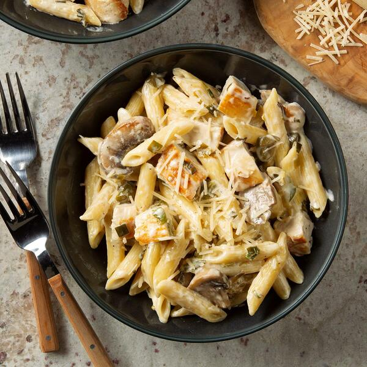

Healthy Creamy Chicken and Pasta

Description
Being on a diet, the words creamy and pasta usually are reserved for only my cheat days. I wanted to make something and not feel guilty about eating it, so I whipped this up in the kitchen. It's delicious and very adaptable; change it up however you like! Has a nice little bite with the red pepper flakes added. This would also be fantastic with onion added.
Ingredients
- 1 (8 ounce) package whole wheat penne pasta
- 2 tablespoons olive oil
- 3 tablespoons minced garlic
- 1 pound skinless, boneless chicken breasts, cubed
- 1 (8 ounce) package sliced fresh mushrooms
- 1 (10.5 ounce) can fat-free cream of mushroom soup
- ½ cup water, or as needed
- 1 pinch garlic salt, or to taste
- 1 pinch red pepper flakes, or to taste
Steps
- Fill a large pot with lightly salted water and bring to a boil. Stir in penne and return to a boil. Cook pasta uncovered, stirring occasionally, until cooked through but still firm to the bite, about 11 minutes; drain.
- Cook and stir olive oil and garlic in a large skillet over high heat just until brown and fragrant, about 2 minutes. Add chicken and mushrooms; stir to coat with garlic and olive oil. Cook chicken until no longer pink in the center and the juices run clear, 6 to 8 minutes. Stir in cream of mushroom soup; gradually add 1/2 cup of water about 1 tablespoon at a time, adding enough to make sauce light and creamy.
- Reduce heat to medium-low heat and gently fold pasta into the chicken and sauce until coated. Add garlic salt and red pepper to taste; remove from heat and serve.